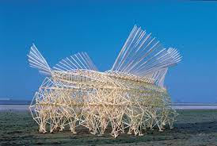

<topbar style="display:none;">
<item><a href="../index.html">Home</a></item>
<item><a href="../about.html">About</a></item>
</topbar>
<!-- This is a comment, it is ignored by the compiler/interpreter -->
## Week 1 - Precedents
Aside from an introduction to the course, we were shown the central project from which our work this semester will
revolve around: a contraption or mechanism which can draw energy from the environment around it.
Some good examples of this included the 'Strandbeests,' contraptions made by Theo Jansen which make use
of the wind in order to move around the beach, often inspired by the mechanics of life.

<iframe width="600" height="400" src="https://www.youtube.com/embed/LewVEF2B_pM" title="YouTube video player" frameborder="0" allow="accelerometer; autoplay; clipboard-write; encrypted-media; gyroscope; picture-in-picture" allowfullscreen></iframe>